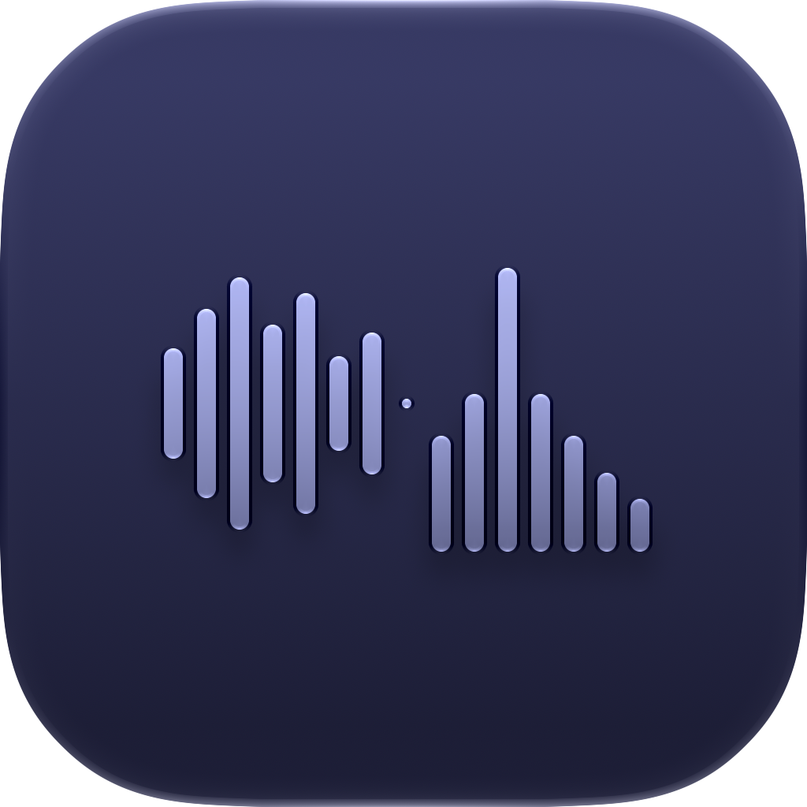
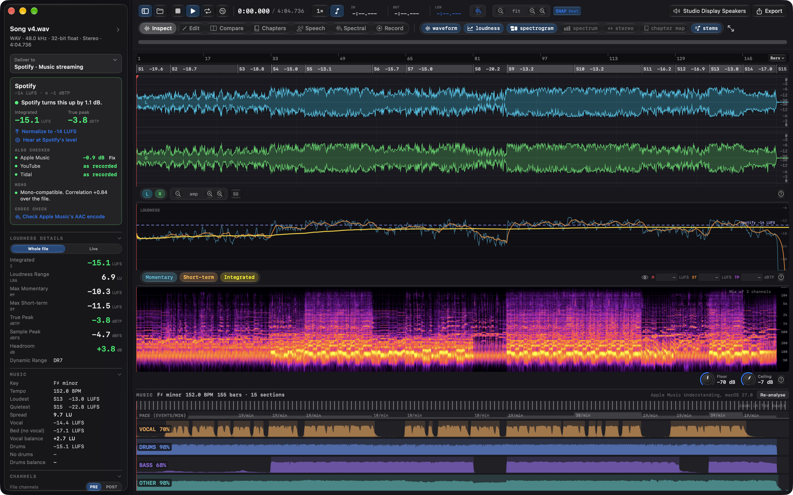
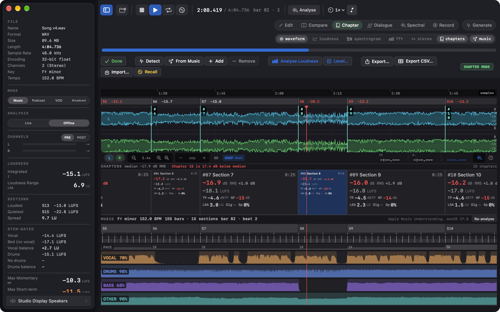
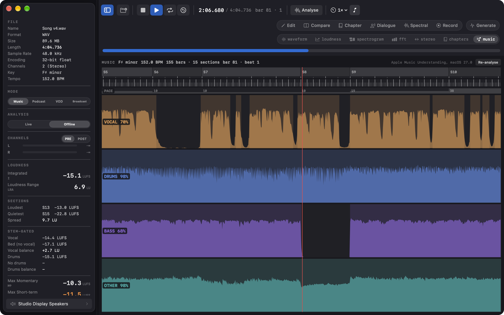

Workflow · Songs
On macOS 27, Apple's on-device music analysis reads a song's key and tempo, its sections, bars and beats, and its four stems: vocals, drums, bass and other. Specula measures against them with its own BS.1770-4: each section's loudness under the ruler, the vocal's loudness against the bed, and the sections as chapters for a table of per-section readings.

One number hides the parts
A track that reads −10 LUFS integrated can still run a chorus 3 LU above its verses.
Or sit its vocal too far under the bed to survive a phone speaker. Apple's analysis finds the song's structure and its stems, and Specula measures each part with the same BS.1770-4 meter as the rest of the app, so a loud chorus or a buried intro shows on the timeline, and the vocal's level against the bed is a number.
From file to sections
The analysis runs on its own, the timeline shows what it found, the Chapters task turns it into a table.
Whose numbers
The structure, the stems, the key and the tempo are Apple's analysis and are labelled so throughout. Every loudness figure is Specula's own BS.1770-4 measurement. The analysis runs on the Mac and nothing is uploaded. It needs macOS 27; everything else in Specula runs on macOS 14 and later.
Under Podcast, Audiobook or Film and TV, a song gets a note under Deliver to, "Apple's music analysis found a key, so this looks like a song.", with a switch to Music streaming, where the delivery card also checks Apple Music's AAC encode and the mono fold-down. Mastering →
On screen


Part by part
On macOS 27 a song opens with its key, tempo and sections, each section carries its own loudness on the timeline, and the vocal's level against the bed is a reading in the sidebar.